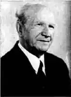

ЩЕГОЛЄВ Василь Матвійович Драматург і артист
Народився Василь Щеголєв 18 травня 1904 року у Костянтинограді.
В 17 років почав працювати в Красноградському народному театрі. Потім — в театрі ім. Зеньковецької та у Дніпропетровському театрі ім. Шевченка. Після війни закінчив Київський інститут театрального мистецтва ім. Карпенка-Карого (театральний факультет). Учасник Великої Вітчизняної війни. Друкуватись почав у 1928 році. П'єси Щеголєва видавалися в збірках, виходили окреміші збірниками: "Берізка", "Осінні квіти", За брамою" та інші. Його п'єси користуються великою популярністю не тільки і нашій країні, але й далеко за її межами. В музеї є фото — на сцені в Нью-Йорку грають п'єсу Щеголєва "Єдиний чин".